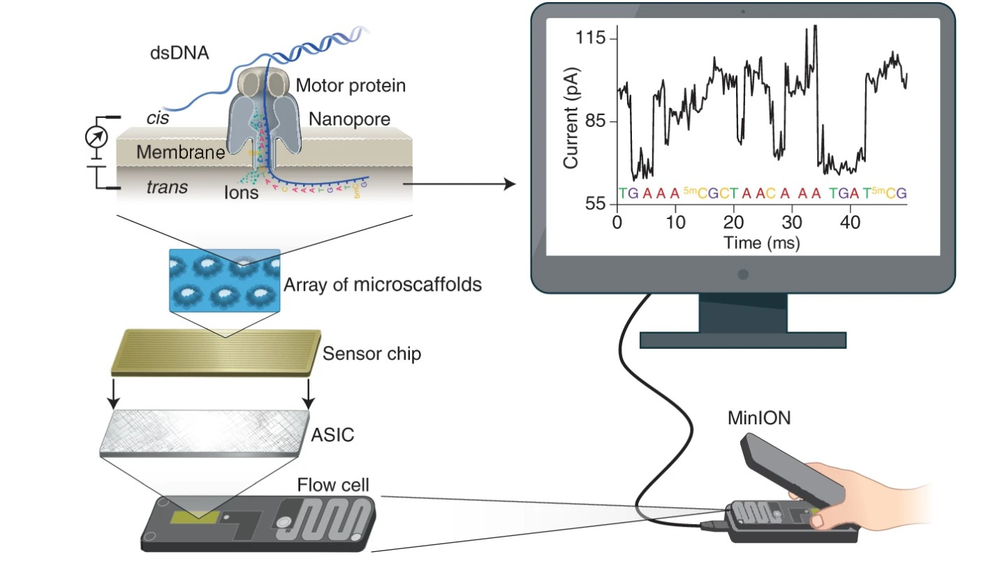

A Multi-task Benchmark Dataset for Nanopore Sequencing
NanoBaseLib is a comprehensive dataset integrating 16 public datasets with over 30 million reads. |
||
|---|---|---|
NanoBaseLib is a benchmark platform covering 4 critical tasks. |
||
NanoBaseLib is a sofeware package designed to incorporate new datasets efficiently. |
Principle of Nanopore sequencing

Nanopore sequencing technology measures the current signal by translocating a DNA/RNA molecule through a nanoscale pore anchored on a lipid membrane, as illustrated in Fig. 1. The shape, size, and chemical properties of nucleotides in the pore jointly determine the current signals, which are collected and utilized to infer the nucleotide sequence using computational methods (e.g., seq2seq deep learning models). There are multiple nucleotides (usually 5) in the pore, which we term as kmer (e.g., 5mer). The inferred $k$mers are assembled into a DNA/RNA sequence computationally, which completes the sequencing process.
Nanopore sequencing technology measures the current signal by translocating a DNA/RNA molecule through a nanoscale pore anchored on a lipid membrane, as illustrated in Fig. 1. The shape, size, and chemical properties of nucleotides in the pore jointly determine the current signals, which are collected and utilized to infer the nucleotide sequence using computational methods (e.g., seq2seq deep learning models). There are multiple nucleotides (usually 5) in the pore, which we term as kmer (e.g., 5mer). The inferred $k$mers are assembled into a DNA/RNA sequence computationally, which completes the sequencing process.
Nanopore sequencing technology measures the current signal by translocating a DNA/RNA molecule through a nanoscale pore anchored on a lipid membrane, as illustrated in Fig. 1. The shape, size, and chemical properties of nucleotides in the pore jointly determine the current signals, which are collected and utilized to infer the nucleotide sequence using computational methods (e.g., seq2seq deep learning models). There are multiple nucleotides (usually 5) in the pore, which we term as kmer (e.g., 5mer). The inferred $k$mers are assembled into a DNA/RNA sequence computationally, which completes the sequencing process.
Beyond sequencing: machine learning powers biological discovery
Oxford Nanopore Technologies sequencing
© 2024. All rights reserved.